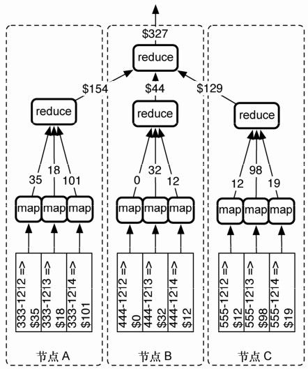

从事过建筑的人都知道，有种用来加强混凝土的钢条，称作钢筋。正如Riak（读作”Ree-ahck”）一样，钢筋不会单独使用，它往往用于互相作用的各个部分，以使整个系统持久耐用。于是，系统中的每个组件都廉价又不起眼，但只要使用得当，就可构建起足够简单且牢固的基础结构。
Riak是一种分布式的键-值（key-value）数据库。其中，值可以是任何类型的数据，如普通文本、JSON、XML、图片，甚至视频片段；而所有这些都可以通过普通的 HTTP 接口访问。你有什么，Riak就能存什么。
容错是Riak的另一特性。服务器可在任何时刻启动或者停止，而不会引起任何单点故障。不管是增加或者移除服务器，甚至有节点崩溃（谁都不想这样），集群依然可以持续忙碌地运行。Riak让你不再整夜无眠担心集群，某个节点失效不再是紧急事件，完全可以等到第二天早晨处理。Riak的核心开发者 Justin Sheehy曾提到：“（Riak团队）非常注重可写入性……为的是可以回家睡觉。”
然而万事都有利弊取舍，Riak的灵活性自有其代价。对于自由定义的（ad hoc）查询， Riak缺乏有力支持；而键-值存储的设计，使得数据值无法相互连接（即，Riak没有外键）。Riak试图将这些问题各个击破，我们会在后面几天读到相关内容。
在本书中，我们会看到，比起其他数据库，Riak 更喜爱万维网（尽管 CouchDB 以很小的差距排在第二位）。可以通过URL、HTTP头和HTTP方法（如POST）查询，Riak则会返回相应的数据和HTTP状态码。
Riak和cURL
本书旨在研究7种数据库及其概念，而非讲授新的编程语言，所以我们尽可能避免引入任何新语言。Riak提供HTTP REST接口（REpresentational State Transfer，表述性状态转移），所以我们可以通过URL工具cURL与Riak交互。当然，在实际生产中，根据所选择的编程语言，你总会使用对应的驱动程序。而 cURL 可以让我们不依赖任何驱动或者编程语言，一览Riak底层API。
像Amazon这样的数据中心，必须快速响应处理大量请求，Riak是这些数据中心很棒的选择。如果客户每等待一毫秒，都会造成潜在的损失，Riak几乎是这种案例的最佳解决方案——它易于管理、便于搭建，还能根据需要扩展。你要是用过SimpleDB或者S3之类的Amazon Web服务，一定会注意到Riak的形式与功能，和它们有相似的感觉。这可不是什么巧合，Riak的灵感正是来自于Amazon Dynamo的论文。1
注释1 http://allthingsdistributed.com/files/amazon-dynamo-sosp2007.pdf
本章会探究Riak如何存储并检索数据，以及如何使用链接将数据捆绑。然后会探索本书中大量使用的数据检索概念：映射-归约（mapreduce）。此外，也会看到 Riak 如何把节点服务器组成集群，并且在节点发生故障时处理请求。最后，我们看看Riak如何处理因写入分布式服务器而产生的冲突，以及基本服务器的一些扩展。
可以下载和安装 Basho2（资助 Riak 开发的公司）提供的 Riak，不过我们更倾向于通过编译进行安装，以便学习一些预配置的例子。若着实不想编译Riak，那就安装预编译版本，而后下载源代码并解压到用于学习的服务器。另外，Riak 依赖于 Erlang3，必须安装（R14B03及更新的版本）。
注释2 http://www.basho.com/
注释3 http://www.erlang.org/
由源代码编译Riak，需要3件东西：Erlang、源代码和诸如Make的UNIX编译工具。安装Erlang非常简单（见第6章），花些时间罢了。Riak的源代码可以从代码库下载（Basho网站上有链接——要是你没有安装Git或Mercurial，下载源代码压缩包也无妨）。本章所有的例子都基于1.0.2版本的Riak。
Riak的创造者像圣诞老人一样，在新用户的长袜里放入一个很酷的玩具。在编译Riak的目录中运行这个命令：
$ make devrel
命令完成后，我们可以发现三个示例服务器。启动它们：
$ dev/dev1/bin/riak start
$ dev/dev2/bin/riak start
$ dev/dev3/bin/riak start
如果某个服务器因为端口被占用而无法启动，不要慌。可以编辑故障服务器的/etc/app.config文件，修改类似如下一行内容，以改变 dev1 dev2或 dev3端口：
{http, [ {"127.0.0.1", 8091 } ]}
此刻，有三个名为beam.smp的Erlang进程在运行，分别代表各个独立的Riak节点（服务器实例），而不知道互相之存在。下一步是创建集群，需要用各个节点服务器的riak-admin命令cluster join，将它们指向其他集群节点，从而相互连接。
$ dev/dev2/bin/riak-admin cluster join dev1@127.0.0.1
在 Riak 中，所有节点无主次之分，因此可以让节点服务器指向任何其他节点。既然dev1和dev2都在集群中，节点dev3可以指向两者中的任意一个。
$ dev/dev3/bin/riak-admin cluster join dev2@127.0.0.1
用Web浏览器打开http://localhost:8091/stats，查看节点服务器的统计信息，可以确认它们处于正常状态。在这个过程中，会提示你下载文件，其中包含关于集群的大量信息。文件内容大致如下所示（为方便阅读，排版有所修改）：
{
"vnode_gets":0,
"vnode_puts":0,
"vnode_index_reads":0,
...
"connected_nodes":[
"dev2@127.0.0.1",
"dev3@127.0.0.1"
],
...
"ring_members":[
"dev1@127.0.0.1",
"dev2@127.0.0.1",
"dev3@127.0.0.1"
],
"ring_num_partitions":64,
"ring_ownership":
"[{'dev3@127.0.0.1',21},{'dev2@127.0.0.1',21},{'dev1@127.0.0.1',22}]",
...
}
通过端口8092（对应dev2）和8093（对应dev3）访问其他节点的统计信息，不难发现，环（ring）中的所有节点服务器都是平等的参与者。我们不妨以dev1为例进一步了解节点统计信息。
ring_members 属性包含所有节点的名字，因此对于每个服务器都是相同的。再看connected_nodes属性，它则包含环中的其他所有节点服务器的列表。
显然，可以停止某个节点，从而改变connected_nodes属性的值...
$ dev/dev2/bin/riak stop
刷新/stats页面，会发现节点dev2@127.0.0.1从connected_nodes列表中消失。启动dev2，它会再次加入Riak环（环的内容，我们将在第2天讨论）。
REST是REpresentational State Transfer的缩写，意为表述性状态转移。听起来像个拗口的专业术语，但它已成为Web应用架构的事实标准，值得我们了解。REST是将资源映射到URL及使用CRUD方法与这些URL交互的的标准。CRUD方法意为：POST（Create）、GET（Read）、PUT（Update），以及DELETE（Delete）。
如果还没有安装它，就安装HTTP客户端程序CURL。HTTP客户端程序cURL易于指定HTTP方法（如GET与PUT）和HTTP头信息（如Content-Type），所以不妨使用从cURL作为REST接口。利用curl命令，无需交互式控制台或者Ruby驱动程序，直接同Riak服务器的HTTP REST接口通信。
可以ping某个节点，以验证curl命令与Riak交互良好。
$ curl http://localhost:8091/ping
OK
发送一个会导致问题的请求。参数-I的意思是我们只要HTTP响应的头。
$ curl -I http://localhost:8091/riak/no_bucket/no_key
HTTP/1.1 404 Object Not Found
Server: MochiWeb/1.1 WebMachine/1.7.3 (participate in the frantic)
Date: Thu, 04 Aug 2011 01:25:49 GMT
Content-Type: text/plain
Content-Length: 10
Riak采用HTTP的URL与方法，同样它也使用HTTP头和错误代码。这里的404响应与你平日所遇到的网页无法找到的错误代码并无不同。不妨更进一步，试试对Riak提交PUT方法请求。
参数-X PUT意为执行HTTP的 PUT方法，以存储并检索某个显式键。-H参数将紧接其后的文本作为HTTP头信息。在这条命令里，还把MIME内容类型设置为HTML。-d参数后的所有内容（也就是HTTP体）会被Riak设置为一个新值。
$ curl -v -X PUT http://localhost:8091/riak/favs/db \
-H "Content-Type: text/html" \
-d "<html><body><h1>My new favorite DB is RIAK</h1></body></html>"
命令完毕后，如果你在浏览器中浏览http://localhost:8091/riak/favs/db，就会看到一条出自你手的消息。
Riak是一种键-值存储方式，自然需要传给它键以检索值。为了避免键冲突，Riak将键分为各个种类，放入桶（bucket）中。比如，表示编程语言的java不会与作为饮料的animals相冲突。
我们将建立一个系统，来管理小狗旅馆中动物的信息。首先，新建一个 animals 桶，包含每个毛茸茸的房客的信息。URL遵循这样的模式：
http://SERVER:PORT/riak/BUCKET/KEY
把数据填入Riak桶的一个简单方式是事先知道键。首先将小狗Ace加入。Ace的小名是 The Wonder Dog，给它的键为 ace，值为{"nickname" : "The Wonder Dog"，"breed" : "German Shepherd"}。你不必显示地新建桶，事实上，只要把第一个值加入某个桶名，相应的桶就创建了。
$ curl -v -X PUT http://localhost:8091/riak/animals/ace \
-H "Content-Type: application/json" \
-d '{"nickname" : "The Wonder Dog", "breed" : "German Shepherd"}'
加入新值会得到204响应代码。因为curl命令中的-v参数，该命令输出了响应的头。
< HTTP/1.1 204 No Content
可以用如下命令查看已创建的桶列表。
$ curl -X GET http://localhost:8091/riak?buckets=true
{"buckets":["favs","animals"]}
当然，也可以选择在HTTP响应中包含体，而不只是头。通过增加另一个动物房客Polly，来看看命令的效果：
$ curl -v -X PUT http://localhost:8091/riak/animals/polly?returnbody=true \
-H "Content-Type: application/json" \
-d '{"nickname" : "Sweet Polly Purebred", "breed" : "Purebred"}'
这次你会看到响应代码200。
< HTTP/1.1 200 OK
若我们不讲究键名，Riak会在POST方式的请求下生成一个键。
$ curl -i -X POST http://localhost:8091/riak/animals \
-H "Content-Type: application/json" \
-d '{"nickname" : "Sergeant Stubby", "breed" : "Terrier"}'
生成的键会显示在响应头的Location属性里，我们也能在响应头里看到成功响应代码201。
HTTP/1.1 201 Created
Vary: Accept-Encoding
Server: MochiWeb/1.1 WebMachine/1.7.3 (participate in the frantic)
Location: /riak/animals/6VZc2o7zKxq2B34kJrm1S0ma3PO
Date: Tue, 05 Apr 2011 07:45:33 GMT
Content-Type: application/json
Content-Length: 0
而通过GET方法（如果没有指定，该请求是CURL的默认值）对这个位置的请求会检索这个值。
$ curl http://localhost:8091/riak/animals/6VZc2o7zKxq2B34kJrm1S0ma3PO
DELETE方法会把这个值删除。
$ curl -i -X DELETE http://localhost:8091/riak/animals/6VZc2o7zKxq2B34kJrm1S0ma3PO
HTTP/1.1 204 No Content
Vary: Accept-Encoding
Server: MochiWeb/1.1 WebMachine/1.7.3 (participate in the frantic)
Date: Mon, 11 Apr 2011 05:08:39 GMT
Content-Type: application/x-www-form-urlencoded
Content-Length: 0
DELETE方法不会返回任何响应体，但是对于成功的情况会返回响应代码204；否则，就返回404。
若你忘记桶中的键，可以用参数keys=true来查询。
$ curl http://localhost:8091/riak/animals?keys=true
当然，你也能使用参数 keys=stream，以流的形式获取数据。这对于大数集的情况更为安全适用——在数据流中，键数组的对象不断发送，直到以空数组结尾。
将一个键关联到其他键的元数据称为链接，其基本结构如下：
Link: </riak/bucket/key>; riaktag=\"whatever\"
在尖括号（<...>）里的是值链接到的键，紧接着是一个分号，以及一个描述链接如何关联到这个值的标签（它可以是任何字符串）。
1．链接遍历
小狗旅馆有若干笼舍（当然是宽敞、舒适、人性化的笼舍）。为了记录某个动物在哪个笼舍，需要用到链接。通过将 cage 1链接到Polly的键，可以表示 cage 1里住着Polly（这也会创建名为cages的桶）。由于这个笼舍安置在 room 101，因此对于这样的信息，将它设置为JSON数据。
$ curl -X PUT http://localhost:8091/riak/cages/1 \
-H "Content-Type: application/json" \
-H "Link: </riak/animals/polly>; riaktag=\"contains\"" \
-d '{"room" : 101}'
不难发现，这个链接关系是单向的。事实上，才创建的这个笼舍知道 Polly 住在里面，但Polly的信息没有任何修改。可以这样验证，先获取Polly的数据，然后检查Link头中否有变化。
$ curl -i http://localhost:8091/riak/animals/polly
HTTP/1.1 200 OK
X-Riak-Vclock: a85hYGBgzGDKBVIcypz/fvrde/U5gymRMY+VwZw35gRfFgA=
Vary: Accept-Encoding
Server: MochiWeb/1.1 WebMachine/1.9.0 (participate in the frantic)
Link: </riak/animals>; rel="up"
Last-Modified: Tue, 13 Dec 2011 17:53:59 GMT
ETag: "VD0ZAfOTsIHsgG5PM3YZW"
Date: Tue, 13 Dec 2011 17:54:51 GMT
Content-Type: application/json
Content-Length: 59
{"nickname" : "Sweet Polly Purebred", "breed" : "Purebred"}
可以用逗号分隔，按需创建多个链接元数据。把Ace放在 cage 2中，同时用标签 next_to把它指向 cage 1，表示它们是相邻的两个笼舍。
$ curl -X PUT http://localhost:8091/riak/cages/2 \
-H "Content-Type: application/json" \
-H "Link:</riak/animals/ace>;riaktag=\"contains\",
-H "Link:</riak/cages/1>;riaktag=\"next_to\"" \
-d '{"room" : 101}'
Riak链接的特别之处在于链接遍历（以及一种更强大的变形，链接mapreduce查询，明天会研究这部分内容）。通过在 URL 后加上结构如/_,_,_的链接规范，可以获取链接的数据。URL中的下划线（_）表示链接的每个条件查询的通配符：桶（bucket）、标签（tag）和保留（keep）。这些术语稍候解释，先检索来自 cage 1的所有链接。
$ curl http://localhost:8091/riak/cages/1/_,_,_
--4PYi9DW8iJK5aCvQQrrP7mh7jZs
Content-Type: multipart/mixed; boundary=Av1fawIA4WjypRlz5gHJtrRqklD
--Av1fawIA4WjypRlz5gHJtrRqklD
X-Riak-Vclock: a85hYGBgzGDKBVIcypz/fvrde/U5gymRMY+VwZw35gRfFgA=
Location: /riak/animals/polly
Content-Type: application/json
Link: </riak/animals>; rel="up"
Etag: VD0ZAfOTsIHsgG5PM3YZW
Last-Modified: Tue, 13 Dec 2011 17:53:59 GMT
{"nickname" : "Sweet Polly Purebred", "breed" : "Purebred"}
--Av1fawIA4WjypRlz5gHJtrRqklD--
--4PYi9DW8iJK5aCvQQrrP7mh7jZs—
命令的返回结果为multipart/mixed转储的HTTP响应头和体，其中响应体包含所有链接的键/值。这看起来真够呛。好在明天我们会用更为强大的方法来获取链接遍历数据，它的返回值更容易阅读。但今天，我们将继续深究返回结果的语法。
你若不熟悉阅读multipart/mixed的MIME类型，可以先看属性Content-Type，它描述了标志HTTP头和数据体的开始与结束边界的边界字符串。
--BcOdSWMLuhkisryp0GidDLqeA64
some HTTP header and body data
--BcOdSWMLuhkisryp0GidDLqeA64—
在这个例子中，返回的是 cage 1所链接的数据：Polly Purebred。你可能已经注意，返回的响应头并未显示链接信息。不用紧张，数据依然存于链接到的键中。
在使用链接遍历的时候，用具体的值替代下划线进行过滤，只返回我们想要的结果。cage 2有两个链接，因此使用链接规范进行查询会返回包含于cage 2中的Ace，以及与cage 2相邻的cage 1。用桶名animals替代第一条下划线，可以只检索与桶animals相关的结果。
$ curl http://localhost:8091/riak/cages/2/animals,_,_
或者通过tag条件查询，找到相邻的笼舍。
$ curl http://localhost:8091/riak/cages/2/_,next_to,_
最后那条下划线——keep——可以填入一个1或者0。在检索两级链接或者链接的链接时（只要在一个链接模式后添加另一个链接模式），keep 会起作用。不妨，先通过链接next_to，取得与 cage 2相邻的键——cage 1。然后查询链接到 cage 1的 animals。由于keep设置为0，因此Riak不会返回中间步骤的数据（cage 1）。只有Polly的信息会返回，Polly紧挨着Ace的笼舍。
$ curl http://localhost:8091/riak/cages/2/_,next_to,0/animals,_,_
--6mBdsboQ8kTT6MlUHg0rgvbLhzd
Content-Type: multipart/mixed; boundary=EZYdVz9Ox4xzR4jx1I2ugUFFiZh
--EZYdVz9Ox4xzR4jx1I2ugUFFiZh
X-Riak-Vclock: a85hYGBgzGDKBVIcypz/fvrde/U5gymRMY+VwZw35gRfFgA=
Location: /riak/animals/polly
Content-Type: application/json
Link: </riak/animals>; rel="up"
Etag: VD0ZAfOTsIHsgG5PM3YZW
Last-Modified: Tue, 13 Dec 2011 17:53:59 GMT
{"nickname" : "Sweet Polly Purebred", "breed" : "Purebred"}
--EZYdVz9Ox4xzR4jx1I2ugUFFiZh--
--6mBdsboQ8kTT6MlUHg0rgvbLhzd--
如果希望得到Polly以及 cage 1的信息，把keep设置为 1即可。
$ curl http://localhost:8091/riak/cages/2/_,next_to,1/_,_,_
--PDVOEl7Rh1AP90jGln1mhz7x8r9
Content-Type: multipart/mixed; boundary=YliPQ9LPNEoAnDeAMiRkAjCbmed
--YliPQ9LPNEoAnDeAMiRkAjCbmed
X-Riak-Vclock: a85hYGBgzGDKBVIcypz/fvrde/U5gymRKY+VIYo35gRfFgA=
Location: /riak/cages/1
Content-Type: application/json
Link: </riak/animals/polly>; riaktag="contains", </riak/cages>; rel="up"
Etag: 6LYhRnMRrGIqsTmpE55PaU
Last-Modified: Tue, 13 Dec 2011 17:54:34 GMT
{"room" : 101}
--YliPQ9LPNEoAnDeAMiRkAjCbmed--
--PDVOEl7Rh1AP90jGln1mhz7x8r9
Content-Type: multipart/mixed; boundary=GS9J6KQLsI8zzMxJluDITfwiUKA
--GS9J6KQLsI8zzMxJluDITfwiUKA
X-Riak-Vclock: a85hYGBgzGDKBVIcypz/fvrde/U5gymRMY+VwZw35gRfFgA=
Location: /riak/animals/polly
Content-Type: application/json
Link: </riak/animals>; rel="up"
Etag: VD0ZAfOTsIHsgG5PM3YZW
Last-Modified: Tue, 13 Dec 2011 17:53:59 GMT
{"nickname" : "Sweet Polly Purebred", "breed" : "Purebred"}
--GS9J6KQLsI8zzMxJluDITfwiUKA--
--PDVOEl7Rh1AP90jGln1mhz7x8r9--
在取得最终结果过程中的所有对象，都会由这条命令返回。换句话说，保留每个步骤的结果。
2．链接之外
有了链接，可以使用 X-Riak-Meta-头前缀来存储任意元数据。如果我们想记录笼舍的颜色，而这并非日常笼舍管理中的必要数据，这时不妨通过链接把 cage 1标记为粉色。
$ curl -X PUT http://localhost:8091/riak/cages/1 \
-H "Content-Type: application/json" \
-H "X-Riak-Meta-Color: Pink" \
-H "Link: </riak/animals/polly>; riaktag=\"contains\"" \
-d '{"room" : 101}'
使用curl的-I标志获取URL的头，会使该命令返回元数据的名字与值。
Riak将任何数据都另存为二进制编码的值，与普通的HTTP并无不同。MIME类型的意义在于赋予二进制数据上下文——目前为止，我们只处理了普通文本类型。MIME类型存储于 Riak 服务器上，而对于客户端，它们实际上则是一个标志，以便客户端下载二进制数据后，它知道渲染成何种类型。
若想小狗旅馆记录房客的照片，我们只须使用curl命令的data-binary标志，将照片上传到服务器并指定MIME类型为image/jpeg。此外，在这个照片资源上增加指向/animals/polly的链接，以便在取到照片时知道照片的主人。
首先，要创建名为polly_image.jpg的照片，在curl命令中指定放置照片的目录，格式与之前所执行的curl命令类似。
$ curl -X PUT http://localhost:8091/riak/photos/polly.jpg \
-H "Content-Type: image/jpeg" \
-H "Link: </riak/animals/polly>; riaktag=\"photo\"" \
--data-binary @polly_image.jpg
在Web浏览器里访问URL，正如我们平时所认为的客户端-服务器工作方式，照片发送到浏览器并正常渲染。
http://localhost:8091/riak/photos/polly.jpg
由于已经把照片链接到/animals/polly，我们可以从照片的键链接遍历到 Polly，但反过来是不行的。与关系数据库不同，这里没有关于链接的“has a”或者“is a”之类的规则。按需建立某个方向的链接。如果用例需要通过 animals 桶访问照片数据，则应该用这个方向的链接进行替代（或者追加）。
我们希望你有看到 Riak 作为灵活存储方案的一丝潜力。到目前为止，我们只介绍了标准键值存储的实践，以及一些链接的知识。当设计 Riak 的模式时，考虑介于缓存系统与PostgreSQL之间。你将数据分为不同的逻辑分类（桶），而值之间是相互关联的。然而，你不会像关系数据库一样，进一步规范化数据库的精细组件，这是因为 Riak 不在意关系联接进行值的重构。
第1天作业
求索
1．把Riak项目的在线文档加入书签，并找到REST API的文档。
2．找到浏览器所支持MIME类型的列表，尽可能完整。
3．阅读Riak示例配置文件dev/dev1/etc/app.config，并与其他dev配置进行比较。
实践
1．使用PUT方法，更新animals/polly，使其链接到photos/polly.jpg。
2．POST我们尚未尝试的MIME类型的文件（如application/pdf），找到生成的键并在Web浏览器里访问相应的URL。
3．建立一个名为medicines的新桶，PUT一张JPEG图片（以合适的MIME类型），其键为antibiotics，并链接到Ace（可怜多病的小狗）。
今天我们会深入mapreduce框架，执行比标准键-值范式更强大的查询。然后，通过引入mapreduce的链接遍历，实现更强的功能。最后，我们会研究Riak的服务器架构，以及如何使用新的服务器布局提供灵活的一致性与可用性，即使面对网络分区依然有效。
本节需要多一点的数据。为此，需要使用不同种类的旅馆作为示例，以人类旅馆代替小狗旅馆。一个用Ruby写的快速填充脚本，会为 10 000间客房的旅馆创建海量数据。
你熟悉 Ruby 吗？它是一种流行的编程语言。如果你想以简单易读的方式快速开发脚本，Ruby十分适用。你可以在Dave Thomas和Andy Hunt所著的《Programming Ruby: The Pragmatic Programmer’s Guide》中学到更多Ruby的知识，当然，网上也有很多关于Ruby的学习资源。1
注释1 http://ruby-lang.org
需要安装名为RubyGems的Ruby包管理器。2有了Ruby和RubyGems，再安装Riak驱动程序。1此外，可能还需要JSON驱动程序，同时运行两个驱动程序以确保无误。
2 http://rubygems.org
1 http://rubygems.org/gems/riak-client
$ gem install riak-client json
旅馆每个房间的大小是随机的，可供1～8个人居住；房型亦是随机的，比如，单人间或者套房。
riak/hotel.rb
# generate loads and loads of rooms with random styles and capacities
require 'rubygems'
require 'riak'
STYLES = %w{single double queen king suite}
client = Riak::Client.new(:http_port => 8091)
bucket = client.bucket('rooms')
# Create 100 floors to the building
for floor in 1..100
current_rooms_block = floor * 100
puts "Making rooms #{current_rooms_block} - #{current_rooms_block + 100}"
# Put 100 rooms on each floor (huge hotel!)
for room in 1...100
# Create a unique room number as the key
ro = Riak::RObject.new(bucket, (current_rooms_block + room))
# Randomly grab a room style, and make up a capacity
style = STYLES[rand(STYLES.length)]
capacity = rand(8) + 1
# Store the room information as a JSON value
ro.content_type = "application/json"
ro.data = {'style' => style, 'capacity' => capacity}
ro.store
end
end
$ ruby hotel.rb
我们现在已经为人类旅馆（不是小狗旅馆了）填充了示例数据，然后可以在此之上进行mapreduce操作。
作为在多个节点上执行并行任务的算法框架，mapreduce的普及是Google对计算机科学最大的持久贡献之一。mapreduce最早在Google相关主题的开创性论文中描述1，并成为分区容忍性数据存储库中，执行自定义查询的有用工具。
1 http://labs.google.com/papers/mapreduce.html
mapreduce会把问题分解为两部分。一，通过map()方法，将一列数据转换成另一不同类型的一列数据。二，通过reduce()函数，将map()方法所生成的那列数据转换成一个或者多个标量值。这种模式允许系统将任务分成更小的组件任务，然后跨大规模集群服务器并行运行这些任务。通过将包含{country : 'CA'}的Riak值映射到{count : 1}，然后计算所有这些 count的数目以进行归约，就能算出包含{country : 'CA'}的 Riak值的总数。如果在数据集中有 5012个加拿大人，归约的结果则是{count : 5012}。
map = function(v) {
var parsedData = JSON.parse(v.values[0].data);
if(parsedData.country === 'CA')
return [{count : 1}];
else
return [{count : 0}];
}
reduce = function(mappedVals) {
var sums = 0;
for (var i in mappedVals) {
sums[count] += mappedVals[i][count];
}
return [{count:sums}];
}
在某种程度上，mapreduce 与通常运行查询的方法相反。运行在 Rails 系统上的 Ruby脚本能以如下方式抓取数据（通过它的ActiveRecord接口）：
# Construct a Hash to store room capacity count keyed by room style
capacity_by_style = Hash.new{|h.k| h[k]=0}
Room.find_each do |room|#all and each is redlly bad # wouldn't consider it fair to AR
# in this context
capacity_by_style[room.style] += room.capacity
end
Room.all对后台数据库执行SQL查询，类似这样：
SELECT * FROM rooms;
数据库把所有的结果发送到应用服务器，而后应用服务器代码对这些数据执行某些操作。在这个用例中，遍历旅馆中的每个客房，然后为每种房型的客房计算总容量（比如，旅馆中所有套房的容量为448个房客）。这对于小数据集差强人意。但是，随着客房数目的增长，由于数据库持续将每个客房的数据串流到应用服务器，系统会渐渐变慢。
mapreduce 则以相反的方式运作。可以这样理解，在常规查询方式中，首先从数据库抓取数据，然后客户端（或者应用服务器）获取并处理数据，而mapreduce作为一种工作模式，会将某种算法传给数据库节点，之后每个节点负责返回各自的查询结果。节点服务器上的每个对象都“映射”（mapped）到一些常用的键，这些键用来将数据分组，接着，所有相互匹配的键都“归约”（reduced）成某些单一的值。
对于Riak，这意味着是数据库服务器负责映射并归约每个节点上的值。归约的这些值在网络上传输，而在某个其他服务器上（往往是发出请求的服务器）会进一步归约这些值，直到最终的结果传递给发出请求的客户端（视情况而定，或者传递给Rails应用服务器）。
这个简单的变换造就了一种强大的方法，复杂的算法得以在每个节点服务器上运行，从而计算得到传输开销很小的结果，并返回给发送请求的服务器。算法先发送到数据，再将数据发送到算法，是一种更快的查询方式。在图 3-1 中，我们看到如何计算一桶电话账单的总费用，电话账单以电话号码为键，分布在3个服务器上，每个服务器存有前缀相类似的所有电话号码。

图3-1 map函数输出给 reduce函数再输出给其他 reduce函数
map函数的结果会输入reduce函数；然而，map函数和reduce函数共同协作的结果也会注入其后连续调用的reduce函数。之后的章节会再次讨论这种思想，因为对于编写有效的mapreduce查询来说，这是其中重要而微妙的一部分。
让我们试着为Riak数据集创建mapreduce函数，该函数的功能就如之前所讨论的，计算旅馆的容量。运用于Riak的mapreduce有一个实用的功能，可以单独运行map()函数，查看所有的中间结果（所谓中间结果，假设你会继续运行 reduce 函数）。我们不妨放缓速度，先看看101、102和103房间的查询结果。
实现映射依赖于我们正在使用的编程语言和源代码；之后才能实际编写map函数，我们所用的是 JavaScript（JavaScript 实现的这个函数只是一个字符串，所以始终需要将某些字符转义）。
在cURL中使用@-命令可以使控制台标准输入保持打开状态，直至接收到CTRL+D。命令中的数据会注入HTTP请求体，并以POST方式提交给命令/mapred（注意，这里的URL是/mapred，而非/riak/mapred）
$ curl -X POST -H "content-type:application/json" \
http://localhost:8091/mapred --data @-
{
"inputs":[
["rooms","101"],["rooms","102"],["rooms","103"]
],
"query":[
{"map":{
"language":"javascript",
"source":
"function(v) {
/* From the Riak object, pull data and parse it as JSON */
var parsed_data = JSON.parse(v.values[0].data);
var data = {};
/* Key capacity number by room style string */
data[parsed_data.style] = parsed_data.capacity;
return [data];
}"
}}
]
}
CTRL-D
/mapred命令希望得到有效的JASON，这里规定了mapreduce命令的格式。首先，选择三个房间，具体的做法是设置一个数组作为输入值“inputs”，其中包含[bucket，key]桶键组合。不过，这条命令的真正重点在于 query 的值，它可以接受的内容有，包含其他对象的JSON对象的数组，如map、reduce和/或link（后面有更多关于link的讨论）。
这一切归根结底取决于v.values[0].data，它会被JSON.parse（...）解析为JSON 对象，然后返回以房型（ parsed_data.style ）为键的房间容量（ parsed_data.capacity）。你能得到的结果如下所示：
[{"suite":6},{"single":1},{"double":1}]
这只是来自于101、102和103房间的三个对象的JSON数据。
不一定要把数据简单地输出为 JSON。事实上，可以将每个键及其值转换为我们希望的任何形式。这里仅仅深入讨论了响应体，然而其实还取回了元数据、链接信息、键以及数据。于是，任何事情都可能发生——可以将每个键值映射到某些其他的值。
如果你觉得可以胜任，通过用rooms桶名修改输入数组[bucket，key]能返回全部10 000个客房的映射值，如下所示：
"inputs":"rooms"
郑重警告：这会输出大量数据。最后，值得一提的是，从1.0版本的Riak起，mapreduce函数由称为Riak Pipe的子系统处理；而更早的系统则使用遗留的mapred_system。作为最终用户，这对你不会有大影响，但这种变化着实提升了运行速度与稳定性。
1．可存储的函数
Riak还提供了一种选择——在桶里存储map函数。这是将算法移入数据库的另一个例子。它是一个存储过程，或者更确切地说，是一个用户定义的函数，这与关系数据库中使用多年的理念类似。
$ curl -X PUT -H "content-type:application/json" \
http://localhost:8091/riak/my_functions/map_capacity --data @-
function(v) {
var parsed_data = JSON.parse(v.values[0].data);
var data = {};
data[parsed_data.style] = parsed_data.capacity;
return [data];
}
只要函数安全地存于Riak，就能指向包含这个函数的桶与键，从而运行此函数。
$ curl -X POST -H "content-type:application/json" \
http://localhost:8091/mapred --data @-
{
"inputs":[
["rooms","101"],["rooms","102"],["rooms","103"]
],
"query":[
{"map":{
"language":"javascript",
"bucket":"my_functions",
"key":"map_capacity"
}}
]
}
正如在请求中置入JavaScript源代码一样，可以通过这种方式得到相同的结果，
2．内置函数
可以使用附于JavaScript对象Riak之中的Riak内置函数。如果运行如下所示的代码， room对象会把值映射到JSON并返回它们。函数Riak.mapValuesJson的作用就是将值映射为JSON。
curl -X POST http://localhost:8091/mapred \
-H "content-type:application/json" --data @-
{
"inputs":[
["rooms","101"],["rooms","102"],["rooms","103"]
],
"query":[
{"map":{
"language":"javascript",
"name":"Riak.mapValuesJson"
}}
]
}
事实上，在一个名为mapred_builtins.js的文件中（该文件可以在线或者深入代码找到），可以找到多Riak所提供的更多内置函数。同样，能用这样的语法调用自己的内置函数，会在明天研究这部分内容。
3．归约
映射（mapping）发挥着它的作用，然而只能用它把单个值转化为其他单个值。对数据集做某种分析，甚至是简单地对记录计数，都需要映射之外其他的其他步骤。而这就是归约（reducing）发挥其作用之处。
我们稍早讨论的SQL/Ruby例子（见3.3.2节）演示了如何遍历每个值，以及如何计算每种房型的总容量。下面将用JavaScript的reduce函数执行这个功能。
传给/mapred的大部分命令是相同的。这次将增加reduce函数。
$ curl -X POST -H "content-type:application/json" \
http://localhost:8091/mapred --data @-
{
"inputs":"rooms",
"query":[
{"map":{
"language":"javascript",
"bucket":"my_functions",
"key":"map_capacity"
}},
{"reduce":{
"language":"javascript",
"source":
"function(v) {
var totals = {};
for (var i in v) {
for(var style in v[i]) {
if( totals[style] ) totals[style] += v[i][style];
else totals[style] = v[i][style];
}
}
return [totals];
}"
}}
]
}
对所有客房运行这个函数回返回以房型为键的总容量。
[{"single":7025,"queen":7123,"double":6855,"king":6733,"suite":7332}]
你在此得到的总容量与之前的结果不会完全一致，因为客房数据是随即生成的。
4．键过滤器
Riak最近的新增特性是称为键过滤器的概念。键过滤器是一组命令的集合，它可以在执行mapreduce之前预处理键。通过这种便捷方式，可以避免加载不需要的键。在如下例子中，将把每个作为键的房号转换成整数，并检查它是否小于 1000（由此只统计最低 10层的数据；10层以上的任何客房都会忽略）。
在返回客房容量的 mapreduce 过程中，以如下代码块（必须以逗号结尾）替代“inputs”:”rooms”。
"inputs":{
"bucket":"rooms",
"key_filters":[["string_to_int"], ["less_than", 1000]]
},
你应该注意到了两点：查询快了很多很多（因为只处理了需要的数据），查询得到的容量也更少（因为只计算了最低10层的数据）。
mapreduce 是绑定数据并对此做总体分析的强大工具。在本书中，我们将经常重温这个概念，其核心概念是完全相同的。Riak对基本的mapreduce形式略作调整，即增加了链接（link）。
5．利用mapreduce进行链接遍历
昨天介绍了链接遍历。今天会讨论如何利用mapreduce进行链接遍历。查询部分会包含map与reduce之外的另一个值选项，即链接。
让我们重回昨天小狗旅馆例子中的笼舍桶，编写一个仅返回 cage 2的映射（记住，住着小狗Ace的笼舍）。
$ curl -X POST -H "content-type:application/json" \
http://localhost:8091/mapred --data @-
{
"inputs":{
"bucket":"cages",
"key_filters":[["eq", "2"]]
},
"query":[
{"link":{
"bucket":"animals",
"keep":false
}},
{"map":{
"language":"javascript",
"source":
"function(v) { return [v]; }"
}}
]
}
归约器模式
如果归约器模式遵循与map函数一样的模式，写reduce函数就会容易些。也就是说，如果将单个值映射为
...[{name:'Eric', count:1}]
...那么reduce函数的结果应像这样：
[{name:'Eric', count:105}, {name:'Jim', count:215}, …]
当然，这不是必需的；而是实践所得。归约器的输出作为其他归约器的输入，可是你不知道map函数的输出、reduce函数的输出或者结合两者的输出，能否作为reduce函数的输入。然而，如果遵循相同的对象模式，你就不必在意这些；所有都会是一致的。否则，reduce函数必须总是检查它收到的数据类型，并作相应的决策。
虽然对cage桶运行mapreduce查询，但返回的是小狗Ace的信息，这是因为Ace与cage 2之间存在链接。
[{
"bucket":"animals",
"key":"ace",
"vclock":"a85hYGBgzmDKBVIsrDJPfTKYEhnzWBn6LfiP80GFWVZay0KF5yGE2ZqTGPmCLiJLZAEA",
"values":[{
"metadata":{
"Links":[],
"X-Riak-VTag":"4JVlDcEYRIKuyUhw8OUYJS",
"content-type":"application/json",
"X-Riak-Last-Modified":"Tue, 05 Apr 2011 06:54:22 GMT",
"X-Riak-Meta":[]},
"data":"{\"nickname\" : \"The Wonder Dog\", \"breed\" : \"German Shepherd\"}"
}]
}]
数据与元数据（一般在HTTP头中返回）都会出现在值数组中。
将映射、归约、链接遍历以及键过滤器放在一起，你便能对任意Riak键数组执行查询。相比从客户端扫描所有数据，这种方式的效率大大提高。
由于这些查询往往在若干节点服务器上同时运行，因此你不必为此长时间等候。但是，如果你真的不能接受等待，查询还有一个选项：超时（timeout）。将超时设置为以毫秒为单位的值（默认值是"timeout": 60000，即 60秒），如果查询在指定时间内没有完成，它就会取消。
Riak 服务器架构消除了单点故障（所有节点都是对等的），并允许任意增大或缩小集群。这在处理大规模部署时是非常重要的—即使若干节点发生故障或者没有响应，数据库仍然可用。
将数据分布于多个服务器须面对一个棘手的先天问题。如果你想要数据库在网络分区发生（即，某些消息丢失了）时依然能够运行，你必须做一个权衡。或者对服务器请求保持可用，或者拒绝请求，以保证数据的一致性。要创建一个具备完全一致性、可用性与分区容错性的分布式数据库，是不可能的。你只能保证三个中的两个（分区容错性与一致性、分区容错性与可用性，或者一致性与可用性但非分布式数据库）。这称为CAP定理（一致性，可用性，分区容错性，Consistency，Availability，Partition tolerance）。详见附录 2，足以说明这是系统设计中的问题。
然而，这个定理有个漏洞。现实是，在任何时刻，不能同时保证一致性、可用性与分区容错性。Riak利用这个事实，允许在每个请求的基础上，以可用性交换一致性。我们先看看Riak如何将服务器组成集群，然后讨论如何调整读写来和集群交互。
1．Riak环
Riak将其服务器配置划分为分区，以一个160比特的数字（即2160）表示。Riak团队喜欢用圆圈代表这个巨大的整数，他们称之为环。当把一个键哈希为一个分区，这个环会帮忙指向存有相应值的服务器。
在搭建一个Riak集群时，遇到的第一个问题就是你想要多少个分区。不妨考虑这样的案例，你有64个分区（Riak的默认分区数）。如果把这64个分区分布在3个节点（或者服务器），Riak会为每个节点分配21或者22个分区（64/3）。每个分区被为一个虚拟节点，或者vnode。每个Riak服务会在启动时计数，依次清点分区直到所有的vnode都清点完毕，见图3-2。
节点A管理vnode 1、4、7、10…63。这些vnode映射到160个比特表示的分区。你若查看三个开发服务器的状态（记住昨天讲过的 curl -H "Accept: text/plain"http://localhost:8091/stats），会见到如下所示的一行：
"ring_ownership": \
"[{'dev3@127.0.0.1',21},{'dev2@127.0.0.1',21},{'dev1@127.0.0.1',22}]"
每个对象的第二个数字就是该节点所拥有的vnode数量。一共是64（21+21+22）。

图3-2 64个vnode的‘Riak环’，分布于3个物理节点
每个vnode代表一系列经过哈希的键。当插入键101的客房数据时，它会哈希到vnode 2的范围，于是键-值对象会存储在节点B。这么做的好处在于，如果需要查找键存储在哪个服务器，Riak只需要对键做哈希运算，找到对应的vnode。具体而言，Riak会把哈希转换成一组潜在的vnode，并使用其中的第一个。
2．节点/读/写
Riak允许通过改变三个值：N、W与R，来控制集群的读写。N是一次写入最终复制到的节点数量，换句话说，就是集群中的副本数量。W是一次成功地写入响应之前，必须成功写入的节点数量。如果W小于N，就认为某次写入是成功的，即使Riak依然在复制数据。最后，R是成功读出一项数据所必需的节点数量。如果R比可用的复制数量大，读出请求将会失败。
我们来更详细地研究每一项。
当在Riak中写入对象时，可以选择在多个节点上创建这个值的副本。这么做的好处是，如果某个节点发生故障，还有另一个节点上的副本可用。如果某个值在若干节点上有副本，这些节点的数量（即N的值）以桶属性n_val表示；默认为3。通过在props对象中设置新值，可以修改桶的属性。此处，设置animals，使其n_val属性为4：
$ curl -X PUT http://localhost:8091/riak/animals \
-H "Content-Type: application/json" \
-d '{"props":{"n_val":4}}'
N 为最终将包含正确值的节点总数。但这并不意味着在调用返回前，我们必须等待值复制到所有这些节点。有时，我们只希望客户端立刻返回，让Riak在后台复制。而有时，我们希望等待，直到Riak完成所有N个节点的副本复制，才让客户端返回。
在认为一次操作成功之前，把必须成功执行的写操作次数设置为W。虽然最终会写入4个节点，然而，如果把W设置为2，仅仅在生成两个副本之后，一次写操作就会返回。剩下的两个节点将在后台复制。
curl -X PUT http://localhost:8091/riak/animals \
-H "Content-Type: application/json" \
-d '{"props":{"w":2}}'
最后，还能使用R的值。一次成功的读操作之前，必须读出R个节点的值。可以为R设置默认值，就如之前处理n_val与w一样。
curl -X PUT http://localhost:8091/riak/animals \
-H "Content-Type: application/json" \
-d '{"props":{"r":3}}'
但是，Riak还提供了更为灵活的解决方案。可以通过在每个请求的URL中设置参数r，选择我们想读的节点数量。
curl http://localhost:8091/riak/animals/ace?r=3
你也许正在问自己，为何需要从多个节点读取信息。毕竟，写入的值最终会复制到 N个节点，可以从其中任意一个节点读取。为说明这个问题，我们发现可视化方法更容易解释这种策略。关于高可用性的漫画见图3-3。
图3-3 高可用性
比如，把NRW设置成 {"n_val":3，"r":2，"w":1}，见图3-4。这种设置使系统的写入操作响应更快，原因在于写操作返回前，只要写入一个节点即可。但是，存在一种可能，恰巧在节点同步之前，另一个读出操作执行了。即使从两个节点读出数据，也有可能得到一个旧值。
图3-4 最终一致性：W+R≤N
一种确保我们能够读到最新值的方法是让 W=N、R=1，就像这样：{"n_val":3，"r":1，"w":3}（见图 3-5）。从本质上讲，这就是关系数据库的做法；通过确保写操作在返回之前完成，以保证一致性。但是，这确实会降低写操作的性能。
图3-5 写操作实现一致性：W=N，R=1
或者，可以只写入单个节点，而从全部节点读出。让 W=1、R=N，就像这样：{"n_val":3，"r":3，"w":1}（见图3-6）。尽管你可能因此读到一些旧值，但你也能保证检索到最新的值。这时，你必须要做的只是找出哪个是最新值（通过一个向量时钟实现，我们明天会进行讨论）。当然，这也会带来副作用，如前所示，读操作会因此减慢。
还有一种选择，可以让W=2、R=2，就如{"n_val":3，"r":2，"w":2}这样（见图3-7）。在这种方法中，只需要写入多于一半的节点，并从多于一半的节点读出，就依然可以保证一致性。同时，分担介于读写之间的延时。这称为法定数（quorum），是确保数据一致性的方法中开销最小的。
图3-6 读操作实现一致性：W=1，R=N
图3-7 法定数实现一致性：W+R>N
可以把R或者W自由地设置为1～N之间的值，但一般会选定1、N或者法定数。这些是R和W可用的常见值，以字符串表示，定义见下表：
这些值除了作为合法的桶属性，也能将它们用做查询参数值。
curl http://localhost:8091/riak/animals/ace?r=all
从所有节点读出数据的危险在于，一旦某个节点出现故障，Riak可能无法满足你的读请求。作为实验，关闭开发服务器dev3。
$ dev/dev3/bin/riak stop
现在如果尝试从所有节点读取数据，请求失败的概率会很大（如果请求没有失败，可以尝试把dev2也关闭，或者关闭dev1，并从端口8092或者8093读取数据；我们无法控制Riak会写入哪个vnode）。
$ curl -i http://localhost:8091/riak/animals/ace?r=all
HTTP/1.1 404 Object Not Found
Server: MochiWeb/1.1 WebMachine/1.7.3 (participate in the frantic)
Date: Thu, 02 Jun 2011 17:18:18 GMT
Content-Type: text/plain
Content-Length: 10
not found
如果你的请求无法满足，会得到404错误代码（未找到对象），这在HTTP请求的领域内，是合理的结果。无法找到检索对象的原因是，没有足够的副本以满足URL请求。当然，这不是什么好事，因而迫使 Riak 进行读操作修复：从依然可用的节点服务器请求键的 N个副本。如果尝试再次访问同一URL，会取到键的值而不是404错误。Riak在线文档中有一个用Erlang实现的范例1。
然而，一种更可靠的做法是寻求一个法定数（从大部分而非全部vnode获取数据）。
curl http://localhost:8091/riak/animals/polly?r=quorum
只要在每次写操作时，强制写入法定数量的节点，就能保证读操作的一致性。另一个可以动态设置的值是W。
你若不想等待Riak写入任何节点，不妨把W设置为0，意思是“Riak，我相信你会将数据写入；只管返回吧”。
curl -X PUT http://localhost:8091/riak/animals/jean?w=0 \
-H "Content-Type: application/json"
-d '{"nickname" : "Jean", "breed" : "Border Collie"}' \
将这种可定制化的功能置于一旁，除非有足够好的理由，否则大部分时间你会选择使用默认设置。让W=0，对日志是非常适用的配置；而让W=N且R=1，很适合高速读取数据，极少写入数据的场景。
3．写入与持久化写入
我们一直对你保守着一个秘密。Riak的写入操作未必是持久化的，也就是说，数据并非立刻写入磁盘。即使一个节点的写入操作成功执行，依然可能因为故障而丢失这个节点1 http://wiki.basho.com/Replication.html中的数据；就算 W＝N，节点服务器也会发生故障，丢失数据。写入的数据在存到磁盘之前，会于内存中缓存片刻，而这毫秒的间隙正是危险的所在。
这的确是个坏消息。但好消息是Riak提供了名为DW的单独设置，用于持久化写入。在这种设置下，直到对象写入给定数量的节点上的磁盘，Riak才会成功返回，因此，这会减慢速度，同时降低风险。这里把dw设置为1，以确保至少一个节点保存数据。
$ curl -X PUT http://localhost:8091/riak/animals \
-H "Content-Type: application/json" \
-d '{"props":{"dw":"one"}}'
或者，如果你愿意，可以基于每个写操作，使用URL中的查询参数dw进行设置。
4．关于临时转移的说明
尝试写入不可用的节点仍然会执行成功，并得到这样的返回“204 No Content”。这是因为Riak会把数据先写入附近的一个节点，该节点一直保存数据，直到它能将这些数据交给不可用的节点。这在短期内是一个很棒的安全网，因为一个节点服务器 一旦出现故障，另一个Riak节点将接管。当然，如果服务器A 的所有请求都转发到服务器B，服务器B就得处理双倍的负载。这里存在一种风险，服务器B可能因为高负载而出现故障，于是渐渐蔓延到服务器C和D，如此类推。这称为级联故障（cascading failure），罕见但依然可能发生。不妨认为这是一个郑重的警告，不要耗尽每台Riak服务器的负载，说不定在某个时刻，某个节点服务器就必须填补缺口。
今天，我们学习了Riak的两大主题：强大的mapreduce方法和灵活的服务器集群能力。mapreduce 在本书中的许多其他数据库中也用到，所以如果你对它还有疑问，我们建议你重新阅读第2天的第一部分，并查看Riak的在线文档1和Wikipedia2上的文章。
注释1 http://wiki.basho.com/MapReduce.html
注释2 http://en.wikipedia.org/wiki/MapReduce
第2天作业
求索
1．阅读关于Riak mapreduce的在线文档。
2．在大量预构建的mapreduce函数中，找到Riak贡献的函数库。
3．从在线文档中找到键过滤器的完整列表，包括字符串转换过滤器 to_upper，查找数字的过滤器，甚至涉及一些简单的 Levenshtein distance1字符串匹配，以及逻辑操作符与/或/非。
注释1 Levenshtein distance，即编辑距离，详见http://en.wikipedia.org/wiki/Levenshtein_distance——译者注
实践
1．针对rooms桶，编写man和reduce函数，查询每层楼客房的总容量。
2．以过滤器扩展前面编写的函数，仅查找42层和43层的客房容量。
今天将探索Riak的边缘地带。我们已经看到Riak是一个如何简单的分布式键值数据库。在处理多个节点的时候，可能发生数据冲突，而有时，我们不得不解决它们。通过向量时钟与同级解决方案（sibling resolution），Riak提供了一种机制，理清写操作的发生顺序，找出最近的写入操作。
我们也会看到，通过提之前/后钩子程序（pre-/post-commit hooks）如何验证传入数据的。此外，我们将用Riak搜索，把Riak扩展到我们自己的个人搜索引擎，以及通过二级索引实现更快的查询。
向量时钟2是像 Riak 这样的分布式系统所使用的令牌，用以理顺发生冲突的键值更新顺序，确保服务器上的数据正确有效。由于若干客户端可能连接到不同的服务器，并且一个客户端更新这个服务器，另一个客户端更新那个服务器（你无法控制写入哪个服务器），因此记录哪些更新以怎样的顺序发生，是非常重要的。
注释2 http://en.wikipedia.org/wiki/Vector_clock
你或许在想“给值加上时间戳，采用时间戳最新的值即可”，但是，这种做法仅仅在所有节点服务器的时钟完全同步的集群中起效。Riak对此不做要求，事实上，保持时钟同步是最为困难的，在许多情况下，甚至是不可能的。使用集中式的时钟系统是对Riak哲学的诅咒，显然，它意味着单点故障的可能性。
向量时钟通过这种方式发挥作用——对每个键值事件（创建、更新或者删除）做标记，标记包含两项内容：哪个客户端更新了数据与以哪种顺序更新。在此基础上，客户端或者应用开发者，得以决定谁在冲突中胜出。如果你熟悉像Git或者Subversion之类的版本控制系统，不难发现，在解决两个人修改同一文件的版本冲突时，本质并无不同。
1．理论中的向量时钟
既然你的小狗旅馆运作良好，你必须开始对客户有更强的选择性。为了做出最好的决策，你筹备了一个由三位动物专家组成的委员会，帮忙评判哪些新的小狗是不错的选择。委员会为每个小狗评分，分数介于1（不够好的选择）～4（完美的候选）之间。所有委员会成员（Bob、Jane和Rakshith）必须完全达成一致。
每名委员把自己的客户端连接到数据库服务器，并且每个客户端会为每个请求盖上独一无二的戳——客户端ID。客户端ID用来组成向量时钟，并追踪更新对象头部的客户端中最后的那个。我们来看一个简单的伪代码示例，稍后尝试Riak中的例子。
Bob首先创建一个对象，其中包含名为Bruiser的新来小狗的分数，体面的3分。向量时钟为他的名字与版本进行如下编码。
vclock: bob[1]
value: {score : 3}
Jane取到这条记录，给 Bruiser的评分为 2。为 Jane的更新所创建的 vclock 继承自Bob的vclock，所以Jane的版本1追加到向量的最后。
vclock: bob[1], jane[1]
value: {score : 2}
同时，Rakshith 取到 Bob 所创建但 Jane 尚未更新的版本。他喜欢 Bruiser，并给了 4分。和Jane一样，他的客户端名字也以版本1，追加到向量时钟的末尾。
vclock: bob[1], rakshith[1]
value: {score : 4}
当天晚些时候，Jane（作为委员会主席）复查了评分。由于Rakshith的更新向量与Jane的更新向量并列，并未出现在Jane的更新向量之后，因此需要解决存在冲突的更新。因为Jane取到了两条记录，如何解决冲突全由她决定。
vclock: bob[1], jane[1]
value: {score : 2}
---
vclock: bob[1], rakshith[1]
value: {score : 4}
她选择折中，于是把分数更新为3。
vclock: bob[1], rakshith[1], jane[2]
value: {score : 3}
问题解决了——这个时刻之后，任何人请求这条记录，都会取到最新的值。
2．实践中的向量时钟
我们用Riak运行一遍前面例子所描述的场景。
在这个例子中，我们希望看到所有的冲突版本，以便能通过将它们手动解决。通过设置animals桶的allow_mult属性，可以保存多个版本的记录。任何包含多个值的键，称为同级数据（sibling value）。
$ curl -X PUT http://localhost:8091/riak/animals \
-H "Content-Type: application/json" \
-d '{"props":{"allow_mult":true}}'
这里，Bob以PUT方法在系统中提交记录，其中包含评分 3以及他的客户端 ID bob。
$ curl -i -X PUT http://localhost:8091/riak/animals/bruiser \
-H "X-Riak-ClientId: bob" \
-H "Content-Type: application/json" \
-d '{"score" : 3}'
Jane和Rakshith都取到Bob所创建的数据（只在这里显示了向量时钟；你得到的头信息会多很多。
注意，Riak对Bob的vclock做了编码，但是在编码的背后，它依然包含客户端和版本（以及时间戳，所以你的查询结果会与这里看到的有所不同）信息。
$ curl -i http://localhost:8091/riak/animals/bruiser?return_body=true
X-Riak-Vclock: a85hYGBgzGDKBVIs7NtEXmUwJTLmsTI8FMs5zpcFAA==
{"score" : 3}
Jane将评分更新为2，并包含了她从Bob的版本中获取的最新向量时钟。对Riak而言，这是一个信号，告诉Riak她提交的值是对Bob的版本的更新。
$ curl -i -X PUT http://localhost:8091/riak/animals/bruiser \
-H "X-Riak-ClientId: jane" \
-H "X-Riak-Vclock: a85hYGBgzGDKBVIs7NtEXmUwJTLmsTI8FMs5zpcFAA==" \
-H "Content-Type: application/json" \
-d '{"score" : 2}'
由于Jane和Rakshith同时获取Bob的数据，因此Rakshith也基于Bob的向量时钟提交了一个更新（评分为4）。
$ curl -i -X PUT http://localhost:8091/riak/animals/bruiser \
-H "X-Riak-ClientId: rakshith" \
-H "X-Riak-Vclock: a85hYGBgzGDKBVIs7NtEXmUwJTLmsTI8FMs5zpcFAA==" \
-H "Content-Type: application/json" \
-d '{"score" : 4}'
当Jane复查评分时，看到的不是预期的数据，而是代表多个选择的HTTP编码以及包含两个同级数据的HTTP响应体。
$ curl http://localhost:8091/riak/animals/bruiser?return_body=true
Siblings:
637aZSiky628lx1YrstzH5
7F85FBAIW8eiD9ubsBAeVk
Riak以multipart格式存储这些版本，所以她能通过接受MIME类型，获取完整的对象。
$ curl -i http://localhost:8091/riak/animals/bruiser?return_body=true \
-H "Accept: multipart/mixed"
HTTP/1.1 300 Multiple Choices
X-Riak-Vclock: a85hYGBgyWDKBVHs20Re...OYn9XY4sskQUA
Content-Type: multipart/mixed; boundary=1QwWn1ntX3gZmYQVBG6mAZRVXlu
Content-Length: 409
--1QwWn1ntX3gZmYQVBG6mAZRVXlu
Content-Type: application/json
Etag: 637aZSiky628lx1YrstzH5
{"score" : 4}
-1QwWn1ntX3gZmYQVBG6mAZRVXlu
Content-Type: application/json
Etag: 7F85FBAIW8eiD9ubsBAeVk
{"score" : 2}
--1QwWn1ntX3gZmYQVBG6mAZRVXlu—
请注意，前面所示的同级数据是设置为特定值的HTTP Etag（Riak称之为vtag）。一个值得注意的有趣方面是，可以指定 URL 中的 vtag 参数，只检索对应的版本：curl http://localhost:8091/riak/animals/bruiser?vtag=7F85FBAIW8eiD9ubsBAe Vk会返回 {"score" : 2}。
Jane现在的工作是用这点信息，做出合理的更新。她决定取两个评分的均值3分，用给定的向量时钟解决冲突。
$ curl -i -X PUT http://localhost:8091/riak/animals/bruiser?return_body=true \
-H "X-Riak-ClientId: jane" \
-H "X-Riak-Vclock: a85hYGBgyWDKBVHs20Re...OYn9XY4sskQUA" \
-H "Content-Type: application/json" \
-d '{"score" : 3}'
如果Bob和Rakshith现在检索bruiser的信息，他们会得到解决冲突后的评分。
$ curl -i http://localhost:8091/riak/animals/bruiser?return_body=true
HTTP/1.1 200 OK
X-Riak-Vclock: a85hYGBgyWDKBVHs20Re...CpQmAkonCcHFM4CAA==
{"score" : 3}
任何将来的请求都会返回3分。
3．时间不断增长
你或许已经注意到向量时钟会随着越来越多的客户端更新操作，而不断增长。这是向量时钟的一个基本问题，对此Riak开发人员早已意识到了。他们扩展向量时钟，让它随着时间推移不断“修剪”，从而保持足较小的大小。Riak修剪老的向量时钟的比率定义于桶的属性中，可以通过浏览桶，查看这个比率属性（以及桶的其他所有属性）。
$ curl http://localhost:8091/riak/animals
你会看到如下一些属性，它们规定了Riak如何在向量时钟变得太大之前，进行修剪。
"small_vclock":10,"big_vclock":50,"young_vclock":20,"old_vclock":86400
small_vclock 和 big_vclock 决定了向量的最小和最大长度，而 young_vclock 与old_vclock则描述了vclock在修剪之前的最小和最大年龄。
你可以在线阅读向量时钟与修剪的更多内容。1
1 http://wiki.basho.com/Vector-Clocks.html
4．提交前/后钩子程序
Riak可以在存储对象之前或者之后，通过钩子程序转化数据。提交前/后钩子程序是在提交数据前后执行的简单的JavaScript（或者Erlang）函数。提交前函数能以某种方式修改传入对象（甚至可以使提交失败），而提交后函数可以对成功的提交做出响应（例如，写入日志或者向某个目的地址发送电子邮件）。
每个节点服务器都有一个名为app.config的文件，需要在其中引用定制JavaScript程序的位置。首先，打开服务器dev1的配置文件，路径为dev/dev1/etc/app.config，找到js_source_dir所在行。然后，将它替代为你期望的任何路径（注意，该行可能被%字符注释掉，所以得先删除%）。修改之后的行如下：
{js_source_dir,"～/riak/js_source"},
需要重复三次这种修改，每个开发服务器一次。不妨创建一个验证器，在提交之前解析传入的数据，保证输入中有评分信息并在1～4分之间。一旦违背这些标准，就会抛出错误，验证器会返回 JSON对象，其中仅包含{"fail" : message}，这里的 message可以是我们希望返回给用户的任何信息。如果数据是期望中的，只需要返回对象，Riak会将它存储起来。
riak/my_validators.js
function good_score(object) {
try {
/* from the Riak object, pull data and parse it as JSON */
var data = JSON.parse( object.values[0].data );
/* if score is not found, fail here */
if( !data.score || data.score === '' ) {
throw( 'Score is required' );
}
/* if score is not within range, fail here */
if( data.score < 1 || data.score > 4 ) {
throw( 'Score must be from 1 to 4' );
}
catch( message ) {
/* Riak expects the following JSON if a failure occurs */
return { "fail" : message };
}
/* No problems found, so continue */
return object;
}
把这个文件存放在你所设置的文件夹js_source_dir中。由于改变了核心服务器的配置，因此需要用restart参数重启所有开发服务器。
$ dev/dev1/bin/riak restart
$ dev/dev2/bin/riak restart
$ dev/dev3/bin/riak restart
Riak会扫描所有.js扩展名的文件，并将它们加载到内存中。可以将桶的precommit属性设置为JavaScript的函数名（不是文件名），这样就能使用该JavaScript函数。
curl -X PUT http://localhost:8091/riak/animals \
-H "content-type:application/json" \
-d '{"props":{"precommit":[{"name" : "good_score"}]}}'
通过设置一个大于4的评分，来测试新的钩子程序。提交前钩子程序强制评分的范围在1～4之间，所以下面的操作将会失败：
curl -i -X PUT http://localhost:8091/riak/animals/bruiser \
-H "Content-Type: application/json" -d '{"score" : 5}'
HTTP/1.1 403 Forbidden
Content-Type: text/plain
Content-Length: 25
Score must be 1 to 4
你会得到禁止访问的代码403，以及在“fail”域中返回的普通文本错误消息。如果用GET方法查询bruiser的值，它的评分依然是3。尝试把评分设置为2，操作就会成功。
提交后钩子程序与提交前类似，只是发生在提交成功之后。因为只能用Erlang编写提交后钩子程序，所以在此会略过这部分内容。事实上，也可以编写Erlang实现的mapreduce函数。但是Riak之旅将在其他预置模块与扩展部分继续。
Riak的若干扩展在Riak交付的版本中是默认关闭的，这些扩展实现了一些新的行为，你会发现它们很有用。
1．搜索Riak
Riak搜索会扫描Riak集群内的数据，并对此建立倒排索引（inverted index）。你或许会从第 2章想起术语倒排索引（GIN index代表Generalized Inverted Index）。正如GIN一样， Riak索引的存在，使各种字符串搜索在分布式环境中快速高效。
使用 Riak 搜索需要在 app.config 文件中启用它`，将 Riak 搜索配置设置为enabled，true。
%% Riak Search Config
{riak_search, [
%% To enable Search functionality set this 'true'.
{enabled, true}
]},
如果你熟悉Lucene之类的搜索引擎，这部分应该是小菜一碟。如果不是，很容易掌握其要点。
需要通过提交前钩子程序，让 Riak 搜索引擎知道我们在数据库中改变了数据。可以在新的animals桶中安装riak_search_kv_hook，它是Erlang模块的提交前函数，具体命令如下：
$ curl -X PUT http://localhost:8091/riak/animals \
-H "Content-Type: application/json" \
-d '{"props":{"precommit":
[{"mod": "riak_search_kv_hook","fun":"precommit"}]}}'
调用命令 curl http://localhost:8091/riak/animals，会显示钩子程序已经加到animals桶的precommit属性。现在，当向animals桶以PUT方法提交JSON或者 XML 编码的数据时，Riak 搜索引擎会对名字与值进行索引。我们上传一些新的小动物。
$ curl -X PUT http://localhost:8091/riak/animals/dragon \
-H "Content-Type: application/json" \
-d '{"nickname" : "Dragon", "breed" : "Briard", "score" : 1 }'
$ curl -X PUT http://localhost:8091/riak/animals/ace \
-H "Content-Type: application/json" \
-d '{"nickname" : "The Wonder Dog", "breed" : "German Shepherd", "score" : 3 }'
$ curl -X PUT http://localhost:8091/riak/animals/rtt \
-H "Content-Type: application/json" \
-d '{"nickname" : "Rin Tin Tin", "breed" : "German Shepherd", "score" : 4 }'
有几种选择可以查询这项数据，不妨使用Riak的HTTP Solr接口（实现了Apache的Solr1搜索接口）。为搜索/animals，访问这样的 URL，/solr 后跟桶名/animals，以及/select命令。而参数指定了搜索条件。
1 http://lucene.apache.org/solr/
这里选择任何包含单词Shepherd的品种。
$ curl http://localhost:8091/solr/animals/select?q=breed:Shepherd
<?xml version="1.0" encoding="UTF-8"?>
<response>
<lst name="responseHeader">
<int name="status">0</int>
<int name="QTime">1</int>
<lst name="params">
<str name="indent">on</str>
<str name="start">0</str>
<str name="q">breed:Shepherd</str>
<str name="q.op">or</str>
<str name="df">value</str>
<str name="wt">standard</str>
<str name="version">1.1</str>
<str name="rows">2</str>
</lst>
</lst>
<result name="response" numFound="2" start="0" maxScore="0.500000">
<doc>
<str name="id">ace</str>
<str name="breed">German Shepherd</str>
<str name="nickname">The Wonder Dog</str>
<str name="score">3</str>
</doc>
<doc>
<str name="id">rtt</str>
<str name="breed">German Shepherd</str>
<str name="nickname">Rin Tin Tin</str>
<str name="score">4</str>
</doc>
</result>
</response>
如果你喜欢该查询返回JSON，不妨增加参数wt=json。可以在查询中合并多个参数，只需用空格（或者URL编码形式的%20）隔开它们，并将参数q.op设置为and。要找到nickname中包含rin，且breed中包含shepherd的品种，执行下面的命令：
$ curl http://localhost:8091/solr/animals/select\
?wt=json&q=nickname:rin%20breed:shepherd&q.op=and
Riak搜索允许更多丰富多彩的查询语法，比如，通配符（用*匹配多个字符，用?匹配一个字符），尽管只能用在搜索项的末尾。查询 nickname:Drag*会匹配 Dragon，但是nickname:*ragon不会匹配任何数据。
范围搜索也是很好的一种选择。
nickname:[dog TO drag]
基于布尔运算符、分组与邻近搜索，可以实现更多的复杂查询。除此之外，可以指定自定义的数据编码，建立自定义索引，甚至在搜索时选择两者之一。也可以在下表中找到其他URL参数：

关于Riak的搜索扩展，还有大量内容可以学习，远远多于这里所能讨论的内容。理想情况下，你已能感受到Riak搜索的强大。如果你打算为大规模Web应用提供搜索功能， Riak是一个明确的选择，但是你若需要大量简单的自由定义的查询，有必要再次评估你的选择。
2．索引Riak
在1.0版本，Riak支持二级索引。这与我们在PostgreSQL中看到的索引类似，但是也略有不同。Riak允许你对附在对象头的元数据索引，而不是对特定的列或者数据列索引。
再次说明，必须修改app.config文件。将存储后端从bitcask切换到eLevelDB，然后重启服务器，如下所示：
{riak_kv, [
%% Storage_backend specifies the Erlang module defining the
%% storage mechanism that will be used on this node.
{storage_backend, riak_kv_eleveldb_backend},
有种Google键值存储称为LevelD1，它的Erlang实现就是eLevelDB。这个新的后端实现允许在Riak中出现二级索引。
1 http://code.google.com/p/leveldb/
当系统一切就绪准备运行时，可以对任意对象索引，这些对象带有任意数量称为索引条目的头标签，它们定义了对象以何种方式索引。标签名以x-riak-index-开始，以_int或者_bin结尾，分别表示整数值或者二进制值（整数外的任何数据）。
为增加昵称为Blue II的小狗，一只巴特勒牛头犬吉祥物（Bulter Bulldogs mascot），我们将按照大学名（事实上，这只小狗是巴特勒大学的吉祥物）以及版本号（Blue 2是第二只牛头犬吉祥物）索引。
$ curl -X PUT http://localhost:8098/riak/animals/blue
-H "x-riak-index-mascot_bin: butler"
-H "x-riak-index-version_int: 2"
-d '{"nickname" : "Blue II", "breed" : "English Bulldog"}'
或许你已经注意到，索引与存储在键中的值没有什么关系。这实际上是一个强大的功能，这种特性让我们可以索引数据，同时对所存储的任意数据保持正交。如果你想把一个视频另存为值，你仍然可以对它索引。
通过索引获取值是相当简单直接的。
$ curl http://localhost:8098/riak/animals/index/mascot_bin/butler
尽管Riak中的二级索引是往正确方向迈出的一大步，但是前方的路依然很长。例如，如果你想对日期索引，你必须存储一个能排序的字符串，比如“YYYYMMDD”。而存储浮点数要求首先以10的某个有效精度的倍数，处理浮点；然后再将它另存为整数——比如，1.45*100＝＝145。而这种转化是由客户端负责的。然而，在mapreduce、Riak搜索以及二级索引之间，Riak还是提供了许多工具，另辟蹊径，以超越简单键的值访问，放宽了键值存储设计中的经典约束。
伴随着一些更进阶的概念，我们完成了Riak的学习：如何通过向量时钟处理版本冲突，如何使用提交钩子程序（commit hook）验证或修改输入数据。我们还深入讨论了使用一组Riak扩展：激活Riak搜索，以及对数据索引，使用户获得更多的查询灵活性。将这些概念，连同第2天的映射归约（mapreduce）和第1天的链接一起使用，你能创建一个灵活的工具组合，远远超出标准的键值存储。
第3天作业
求索
1．找到Riak函数贡献列表库（提示：在GitHub里）。
2．阅读更多关于向量时钟的内容。
3．学习创建你自己的索引配置。
实践
1．创建你自己的索引，定义animals的模式。具体而言，把score域设置为整数类型，按范围查询。
2．启动一个小集群，包含三个服务器（例如，三个笔记本电脑或者EC21虚拟机实例），并分别安装Riak。将这些服务器设置为一个集群。安装Google股票数据集，可以在Basho网站上找到2。
1 http://ec2.amazonaws.com/
2 http://wiki.basho.com/Loading-Data-and-Running-MapReduce-Queries.html
Riak 是我们介绍的第一个非 SQL 型数据库。它是分布式的、有数据副本的、键值增强的存储方式，且不会发生单点故障。
如果你截至目前的数据库经验都限于关系数据库，Riak 也许看起来像一个陌生的野兽。事务、SQL与模式没有了。有的是键（key），而桶（bucket）之间的链接一点不像数据表的联接，并且 mapreduce 又是一种很难上手的方法论。然而，凡事都有利弊，Riak很适合解决某类问题。它可以扩展更多的节点服务器（而非扩展规模更大的单个服务器），而其易于使用的特点，是解决Web独特可扩展性问题的一次极佳尝试。基于HTTP结构之上的 Riak，并非是“炒冷饭”，而是在最大程度上，为各种框架或者 Web 系统增加了灵活性。
如果你想设计一个类似Amazon的大型订货系统，或者你最关注的是高可用性，这时，你应该考虑一下Riak。无疑，Riak的优势之一就是它致力于避免单点故障，设法支持最大的正常运行时间，并且增加（或者缩小）规模以适应变化的需求。如果你没有复杂的数据， Riak让一切维持简单的状态，然而一旦你需要，它也可以处理相当复杂的数据。目前，Riak支持许多编程语言（你能在Riak网站上找到相关内容），但是如果你使用Erlang，就能获得扩展Riak核心的能力。你若需要超出HTTP处理能力的速度，也可以试试通过Protobuf17进行通信，它是一种更有效率的二进制编码和传输协议。
如果你需要简单的查询能力、复杂的数据结构或者严格的模式，又或者你不需要节点服务器进行横向扩展，那么Riak可能不是你的最佳选择。我们对于Riak的主要抱怨之一是，作为自由定义（ad hoc）的查询框架，它依然不够简单而健壮，尽管Riak确实在正确的轨道上前进。mapreduce 提供了无与伦比的强大功能，但是我们希望有更多内置的基于URL 或者其他 PUT 查询的操作。索引的加入是在这个方向上的一大进步，也是我们乐意详述的一个概念。最后，如果你不想编写Erlang代码，你会发现使用JavaScript的一些限制，比如，不能实现提交后处理，或者，较慢的mapreduce执行过程。但是，Riak团队正在解决这些相对较小的问题。
Riak 提供了一个聪明的方法，以规避 CAP 施加于所有分布式数据库上的约束。相比像PostgreSQL这样只支持强写入一致性的系统，Riak对于这个问题的处理能力是惊人的。它利用了Amazon Dynamo论文的深刻观点——CAP可以在每个桶或者每个请求的基础上改变。它的健壮与灵活是开源数据库系统发展的一大进步。当你读到本书中的其他数据库时，想起Riak，你依然会惊叹于它的灵活性。
如果你需要存储海量数据目录，采用其他方式很可能没有Riak做得好。尽管40多年来，人们没有在这方面对关系数据库进行研究和调整，但并非所有问题都需要遵循 ACID或者强制使用数据模式。如果你想把数据库嵌入一个设备或者处理金融事务，你该避免使用Riak。如果你想获得扩展的能力或者在Web上提供数据，请考虑使用Riak。
Table of contents
- 封面
- 扉页
- 版权
- 内容提要
- 译者简介
- 序
- 作者访谈
- 前言
- 致谢
- 目录
- 第1章 概述
- 第2章 PostgreSQL
- 第3章 Riak
- 第4章 HBase
- 第5章 MongoDB
- 第6章 CouchDB
- 第7章 Neo4j
- 第8章 Redis
- 第9章 结束语
- 附录A 数据库概述表
- 附录B CAP定理